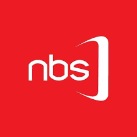
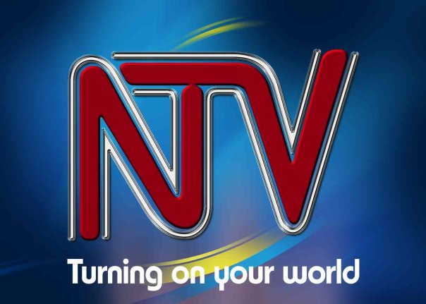
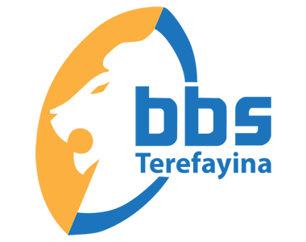
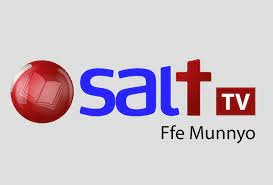
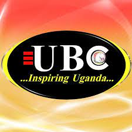

NBS

NBS Television is a leading 24-hour multi-content
channel broadcasting live from Kampala, Uganda. NBS Television
started in mid 2007 drawing on candid reflections of successful television networks
worldwide.
NTV

NTV Uganda is a Ugandan television station under the Nation Media Group,
NMG, operating in East Africa. It was on air since 2006.
It is one of the companies owned by Aga Khan IV
BBS

BBS Terefayina (Television) is a
private limited company incorporated in 2015 located at Masengere Building,
Bulange Way road in Mengo in the Uganda.
SALT

SALT is a Ugandan television station under the Nation Media Group,
NMG, operating in East Africa. It was on air since 2006.
It is one of the companies owned by Aga Khan IV
KTV
KTV (Television) is a
private limited company incorporated in 2015 located at Masengere Building,
Bulange Way road in Mengo in the Uganda
UBC

UBC network has 4 television channels and
11 radio stations that offer broadcasting services
in 27 languages across the country.